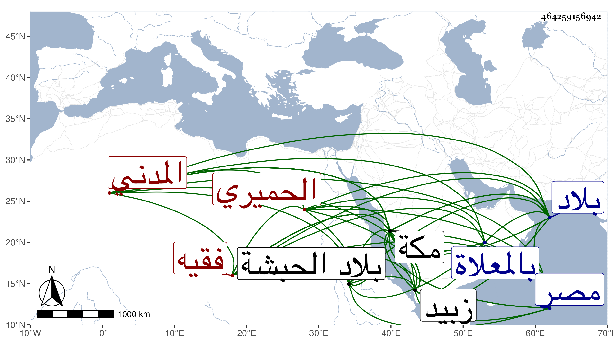

0902Sakhawi.DawLamic.ITO20230111-ara1.EIS1600.464259156942
Biography ID: 464259156942
4
عبد الله بن إبراهيم بن حسين بن محمد العفيف الحميري المدني نزيل مكة وابن عم أبي القسم بن محمد بن حسين فقيه الزيدية ويعرف كل منهما بابن الشقيف بمعجمة مضمومة ثم قاف ثم ياء التصريف ساكنة ثم فاء . قال التقي الفاسي : بلغني أنه ولد بزبيد ونشأ بها ثم قدم إلى مكة وأقام بها مدة ورزق دنيا وصار إلى بلاد الحبشة فأقام بها سبع سنين ثم دخل مصر وأقام بها مدة وولد له بمكة أولاد وصار له بها عقار وكان ذا ملاءة . مات بعد أن أوصى بمبرات وحبس أوقافا لكثير من القربات في سنة سبع بمكة ودفن بالمعلاة .
